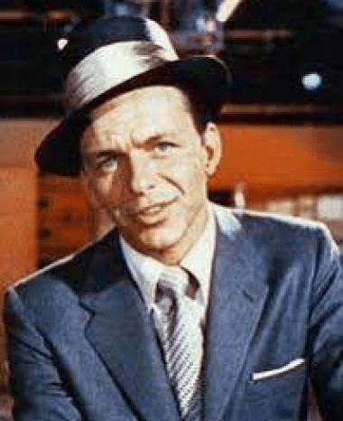
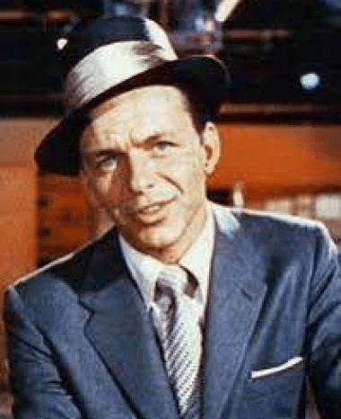

Biografía
Francis Albert Sinatra, conocido como Ol' Blue Eyes, fue un cantante y actor estadounidense, famoso por su voz única y estilo elegante. Alcanzó la fama primero con la banda de Tommy Dorsey y luego como solista, con éxitos que definieron el pop vocal y el swing. Además de su carrera musical, ganó un Oscar como actor y numerosos premios Grammy, asi como Álbum del Año. Su carisma y talento lo convirtieron en un icono cultural duradero.


Como dicho anteriormente, Frank Sinatra comenzó su carrera musical con la banda de Harry James y luego se unió a la orquesta de Tommy Dorsey, donde ganó reconocimiento. Despegó como solista en los años 1940, con éxitos que consolidaron su fama. Durante los años 1950 y 1960, su carrera floreció con álbumes icónicos y colaboraciones con sellos discográficos como Capitol Records y Reprise Records, que él mismo fundó. Con su estilo inconfundible, interpretó clásicos del pop y el swing, dejando un legado duradero en la música.
Una Vida en Fotografías
 


Descubre el Legado Musical de Frank Sinatra
Explorá la icónica discografía de Frank Sinatra y sumérgete en sus inolvidables clásicos que han marcado generaciones. Déjate llevar por la magia de su voz y su inigualable estilo.
Ver Discografía